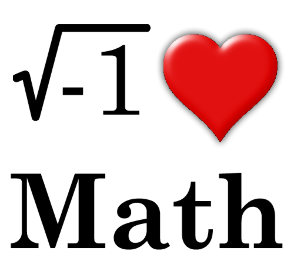
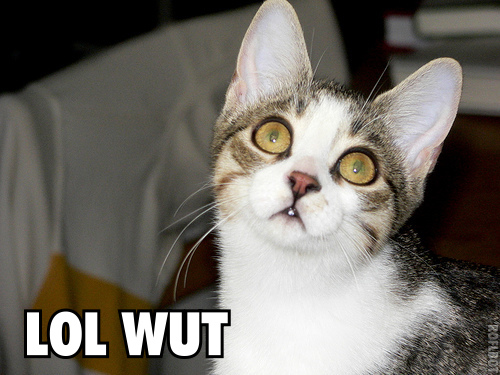

Amusements
Funny Things
The Onion News

The onion is a satirical news site that publishes some funny articles. It is a good laugh to browse the articles if you have some free time.
Here is a link to a onion article about working at work
Numberphile
Numberphile is a YouTube channel that makes interesting videos on math. As I am a math enthusiast, I find the material captivating.
Here is a link to a video where Cliff talks about five sided squares
Know Your Meme
Know Your Meme is a YouTube channel that covers memes and pop culture phenomena.